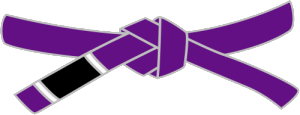
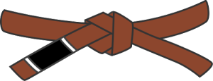
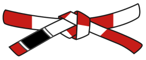
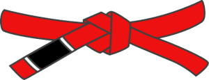

.png)

.png)
Much has been written about the long, thick strip of cloth that is used to hold the Brazilian Jiu Jitsu practitioner's Gi jacket closed during class. Most martial arts that have a specific uniform requirement use the belt to signify a student's rank and progress in the martial art.
BJJ Belts: What You Need to Know
BJJ borrowed the general structure of its ranking system from Jigoro Kano with some minor changes over time to go from white, to blue, to purple, to brown, black and finally to red. The red belt was originally reserved for the founders and creators of the martial art, but has now been awarded to those practitioners who have served the required number of years representing jiu jitsu. In the Gracie system for instance, the red belt is supposed to represent 50 years of training. Achieving black belt is where most average practitioners will peak.
BJJ Belt Meanings
There is much written about the meanings of the various belt colors from white to black, and much of what you determine to be the ultimate meaning of a belt will be partially personal and partially influenced by your instructor and academy and the meaning they assign to each belt.
Let's look at some general ideas to get you started understanding the meaning of the belts.
What does a White Belt Mean?
The white belt is the beginner. Some would argue that this is the hardest belt to achieve because so many people aren't willing to step outside of their comfort zone and challenge themselves with the learning of a martial art like BJJ.
The white belt should be seen as one of the most important people in the room at any time. They are to be looked after, encouraged and challenged all at the same time to ensure that they are learning and enjoying the process, no matter how frustrating it can often times be.
The process of learning jiu jitsu is often compared to the process of learning a new language. In this the beginning, emphasis is usually put into learning the alphabet of a language. The white belt will be presented a vast number of techniques. Attempting to memorize the steps of all of these disparate techniques can be very daunting and before it should be attempted, the white belt would be better served to begin to understand the broader concepts of positions like guard, mount, side control and concepts like passing, sweeping, and control.
What does a blue belt in BJJ mean?
The blue belt has been around a while. To the white belts, they are a seasoned veteran. The blue belt in BJJ has begun to take what they've learned in class in terms of scattered techniques and the positional alphabet of back attacks, guard, guard passing, takedowns and begun to attempt putting things together into words.
The blue belt has begun to understand the bigger picture of BJJ and to start to understand that they need to be actively involved in their development. The blue belt may begin to actively plan out their development, focusing on positions and techniques they are interested in or gravitating towards.
During the earlier belts of white and blue, if competition is of interest to you, it would be wise to explore this element of the art and sport. Though not required for promotion or advancement, preparing for and competing in BJJ tournaments is a good way to spark and gauge your overall improvement.
What does a purple belt in BJJ mean?
By the time you've achieved a purple belt in BJJ, you've dedicated 4-6 (and maybe more) years to your training. You've learned the alphabet and you've begun to put not just words together by combining positions, but you've begun stringing complete sentences together. You understand a wide variety of positions and you've begun to accrue a particular set of skills that you rely on during your live training. You've begun to develop and refine your very own game plan.
Purple belts have mastered a great deal of basics and they're beginning to explore and become more creative in their jiu jitsu, adding elements from their own style to moves that they learned as white and blue belts.
In terms of grappling competition, purple is usually your entrance into the idea of an 'advanced' practitioner. It has been said that a skilled purple belt has as much technical knowledge as they will have as a black belt, they are just less refined and successful putting that knowledge into practice.
What does the brown belt in BJJ mean?
The BJJ brown belt is a force to be reckoned with. They have begun coupling their technical knowledge of moves and submissions with a far deeper understanding of how to use their own body and the body of their opponents to increase the likelihood of success.
Some instructors believe that the time at brown belt should be relatively short in comparison to the other belts, depending on the student's training and overall dedication. By the time someone is a brown belt, they may have been asked to teach others. Giving back to others is one of the most important signs of maturity in BJJ and something that coaches and instructors are always exctited to see from their upper level students.
In terms of competition, high level brown belt events are as exciting as black belt or sometimes more so. The display of skill and tenacity can be very inspiring to watch. Even hobbyist practitioners who have competed through their lower belts will be extremely tough to deal with.
What does a black belt in BJJ mean?
This is one of the hardest questions to answer, because there is so much that is personal to both the instructor and the student when someone gets awarded their black belt.
In simplest terms, the black belt has spent in all likelihood, a decade or more dedicated to their training. The black belt is someone that the lower belts look to for advice and guidance. It's a huge responsibility that shouldn't be taken lightly.
In some ways, the black belt does not simply represent mastery of the art in any way. One of the best ways to look at the black belt is as a new beginning. Your tenacity and hard work has been awarded by one of the highest honors anyone can receive. Does it guarantee the highest level of skill? Not always, nor should it have to. It's not a place to stop jiu jitsu, so it's best not to think of it as a destination. Instead, think of it as another sign post on the lifetime journey that BJJ represents.
Black / Red belt (Coral belt)
The IBJJF requires a practitioner remain a black & red belt for a minimum of 7 years. When a Brazilian jiu-jitsu black belt reaches the seventh degree, he or she is awarded an alternating red-and-black belt similar to the one earned at the sixth degree in Judo. This belt is commonly known as the coral belt. Coral belts are very experienced practitioners, most of whom have made a large impact on Brazilian jiu-jitsu, and are often addressed within the art by the title master.
White / Red Belt
The IBJJF requires a practitioner remain a white & red belt for a minimum of 10 years. The International Brazilian jiu-jitsu Federation recently amended the graduation guidelines with respect to the transition between seventh degree and eighth degree black belt. The transition is specifically noted on page 6 of the IBJJF General System of Graduation, Section 1.3.4. In short, a practitioner who has achieved the rank of 8th degree black belt will wear a red and white belt.
Red Belt
The 9th degree red belt is the highest rank awarded to any currently living practitioner of Brazilian jiu-jitsu. According to Renzo & Royler Gracie, in Brazilian jiu-jitsu the red belt is reserved "for those whose influence and fame takes them to the pinnacle of the art". It is awarded in lieu of a ninth and tenth degree black belt. If a practitioner receives his or her black belt at 19 years old, the earliest they could expect to receive a ninth degree red belt would be at the age of 67. Brazilian jiu-jitsu red belt holders are often addressed within the art by the title grandmaster.
BJJ White Belt Goals
If you're just starting out in BJJ, congratulations because you've taken a very important step that is going to improve your life and health in many ways.
As a white belt, it can seem overwhelming the amount of information being thrown around the mats during even the most basic class. Let's look at some simple goals that you should strive for as a white belt that will help make the entire journey to black belt much easier.
1. Learn how to tie Jiu Jitsu Belt
This is an important step that takes just a little bit of practice. Don't spend too much of your effort learning to perfect the belt tie in the beginning. Over time you will tie your belt thousands of times and so you'll have plenty of time to practice. For now, learn a basic tie and stick with it.
2. Put yourself in the best spot to listen and observe the instructor
Your instructor will demonstrate a technique during class and often times change positions to make sure that everyone can see the nuances of what is being taught. With that said, many times they will move to an angle that's not the best for you. Never be afraid to get up and relocate yourself to a place that allows you to see the technique fully.
3. Ask lots of questions, but beware of What If's
Questions are important to clarify understanding and reinforce the knowledge in our minds, so don't hesitate to ask your coach and instructor (or even a higher belt) a question. Before you ask questions, it's important to keep in mind that the instructor is usually presenting a specific scenario between two parties.
It should be understood in the laboratory of class time that the technique will be most effective if the opponent being described does exactly what the instructor said. Any deviation from this expected reaction, could potentially diminish the effectiveness of the technique or require some completely different technique. So before you start asking a bunch of "What IF" questions, keep that in mind and don't muddy your understanding of what's being taught.
4. Breathe and understand the nature of winning changes over time
One of the most important skills we seem to forget when we're starting out in BJJ is how to breathe. New students tend to hold their breath while they are executing new moves or using a lot of strength. This can be a recipe for disaster and lead to fatigue and frustration.
Overtime, you will begin to become more comfortable in the uncomfortable positions and you will be able to maintain your breath, which will go a long way to helping you survive your opponent or teammates onslaught.
Also as a new student, it's important to understand that your goal is not to catch everyone in submissions and tap them out in the beginning. While this is a great thing down the road, initially you simply won't have the skill to make it happen and therefore, you may become frustrated because "You didn't win." Winning as a concept looks very different for a new student. Getting through an entire 5 minute round against a higher level opponent without stopping due to exhaustion is a win. Being able to make it an entire round without being submitted is a win. Overtime, "winning" is going to take on a number of forms and that's the best way to progress. As a black belt, winning might mean only catching all of your training partners in one specific technique like the triangle, to make things more challenging and increase the effectiveness of your triangle.
This is by no means an exhaustive list of white belt tips, but if you at least incorporate these in the beginning, it will save you a little bit of time and frustration in the long run. And when you're a higher belt, rest assured you will probably have a tip or two to share with newer students.
How Long To Get Blue Belt in BJJ
There is no hard and fast rule for promotions, only guidelines. The typically length of time to achieve the blue belt is 6-24 months. Many factors can impact this duration and none of them are indicative of someone being a "good" or "bad" student of BJJ. One of the earliest lessons you need to learn is that your journey to black belt is your journey and you shouldn't necessarily compare yourself to other students and their progress.
The number of classes attended is probably one of the most basic aspects of progress you can control. The more you train, the better you get. It's very simple. The amount of time you spend off the mats can also impact the speed of your development or improvement. Students who spend lots of time drilling techniques, live sparring, and studying off the mats tend to pick things up more quickly and retain the information because they are spending more time putting their knowledge into practice.
How Long to Get Purple Belt in BJJ
The overall length of progression becomes more indicative of an individuals dedication the longer they train. If you had to put an average guideline, it's probably 1-3 years, but can be shorter or longer depending on the individual.
The same elements like drilling, open training and investing time in off-mat study will go a long way. In addition, the students who compete regularly can also find themselves progressing more quickly because of the increased intensity of their training sessions and workload, as compared to an average practitioner who trains 3 times a week for instance.
How Long to Get Brown Belt in BJJ
The brown belt typically takes another 1-3 years depending on training frequency and overall dedication from the student. By this time, many students have begun teaching classes of their own. Being able to articulate something as complex as jiu jitsu to a beginner is a skill that must be practiced and developed the same as any other technique.
How Long to Become a Black Belt In BJJ
By the time you've reached the coveted black belt, your instructors and coaches have become confident that you are a dedicated practitioner who has developed a solid background of skills and techniques on the mat. The black belt students are the leaders of the academy and should carry that heavy responsibility with poise.
The overall length of time to achieve the black belt is universally accepted to be 10 years of training. Can it be faster? Of course, we hear the stories of people like Gordon Ryan who achieved their black belt in 5 years. Does this mean that Gordon Ryan is a superior human? No, it means that he had the dedication and work ethic to spend 5 solid years training 6-8 hours a day and teaching classes, with very few days off if at all.
It can also be longer than 10 years and that's fine as well. At the end of the day, the black belt for most of us will be the final belt we receive, so what's the rush? The more you see jiu jitsu as an endless road full of challenges and triumphs instead of a destination or place to end up, the better. Enjoy it because it is said that less than 5% of white belts who start BJJ stick around long enough to achieve black belt.